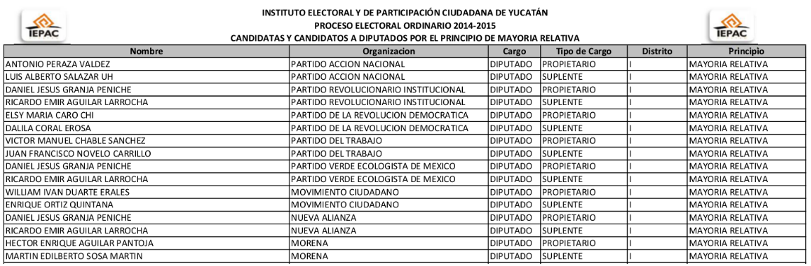
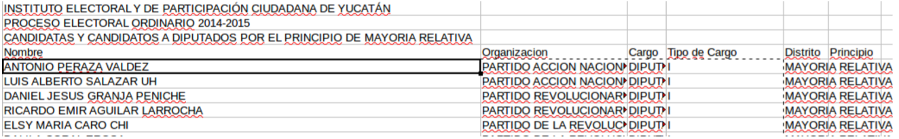
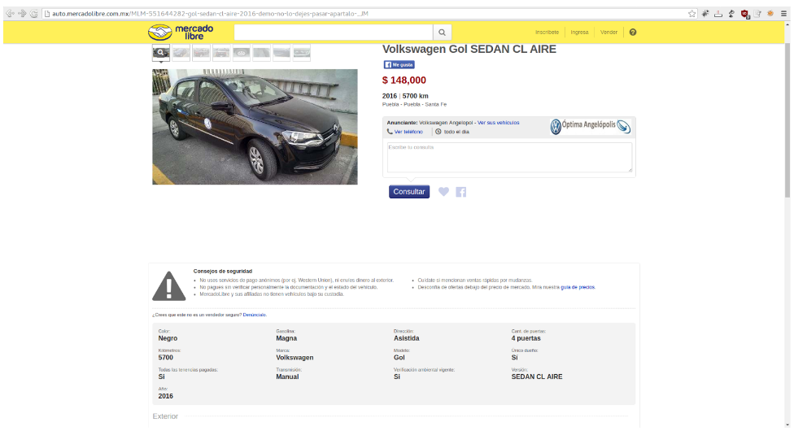
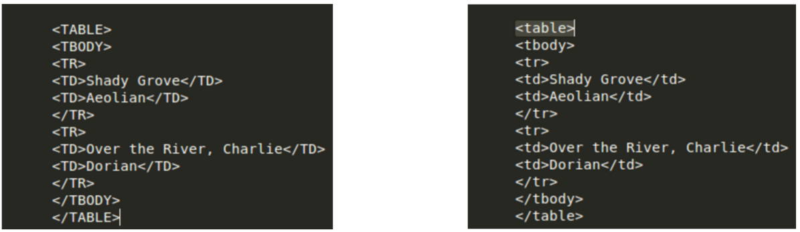
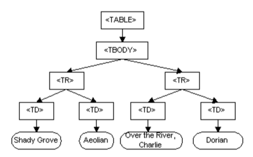

class: center, middle # Taller de escrapeo Paco Mekler https://github.com/mekler/taller-de-scraping --- # ¿Quién soy? * Ingeniero en Telemática * CTO en OPI * Activista de datos abiertos --- # Agenda 1. Introducción 1. XHTML, DOM y XPath 1. Paquetes HTTP (POST y GET) 1. Sesiones 1. Ajax 1. Herramientas 1. Ejemplos --- class: center, middle # Introducción --- class: center, middle Scraping <br> <br> es extraer datos de un formato <br> “desordenado” a uno normalizado. --- # PDF scraping Antes...  Después...  --- # Web Scraping  --- # Razones para escrapear * Muchas veces, la información en Internet está más actualizada que la de fuentes oficiales. * Twitter, Facebook, Instagram, etc. contienen datos que fuentes oficiales jamás tendrían. * Conseguir fuentes de datos es parte de las responsabilidades de un buen equipo de análisis de datos. * Escrapear un sitio de gobierno es más rápido que esperar a que compartan sus datos en formato abierto. --- class: center, middle # Tantita teoría --- # HTML * Hypertext Markup Language * Tim Berners-Lee (trabajaba en el CERN) * Se pensó para compartir archivos entre redes de computadoras * Se crea el estándar HTML en 1990 * World Wide Web Consortium (W3C) en 1994 * Versión más actual es html5 --- # XHTML “XHTML extiende HTML 4.0 combinando la sintaxis de HTML, diseñado para mostrar datos, con la de XML, diseñado para describir datos”. * Web semántica * Algunas modificaciones: * Nombres de atributos y elementos en minúsculas (antes todo en mayúsculas; horrendo) * Los elementos que no estén vacíos necesitan etiquetas de cierre * Requiere una definición concreta de versión de XHTML al inicio del archivo. --- # Nos falta... * Javascript * Lenguaje, inicialmente, del lado del usuario. Vivía en los browsers y daba vida a las páginas estáticas de HTML. * Existe un sistema operativo basado en javascript * https://github.com/NodeOS/NodeOS * https://github.com/os-js/OS.js * NodeJS como servidor. * CSS * Cascade style sheet * CSS 3.X es la más actual * Antes de estas cosas había páginas estáticas y aburridas. --- # cURL “Es un proyecto de software que provee una librería (libcurl) y una herramienta desde línea de comando utilizando diversos protocolos.” * Está hecha en C * Prácticamente, todos los lenguajes tienen una implementación que usa cURL * Soporta peticiones encriptadas (SSL) --- # AJAX Asynchronous Javascript + XML * Agiliza los sitios web al no tener que recargar la página para ver contenido nuevo. * Para páginas web, la mezcla de tecnologías es XHTML+JS+CSS --- # Document object model (DOM) “The Document Object Model is an application programming interface (API) for HTML and XML documents.” * DOM crea una estructura de árbol basado en un XHTML de entrada para poder extraer información de él. --- # Ejemplo sed -r 's/(<\/?[A-Z]{1,6}>)/\L\1/g'  ---  --- class: center, middle # XPath “XML Path Language es un lenguaje de consulta (query language) para seleccionar nodos de un documento XML” --- # Cheat Sheet de scrapy * Instalación `sudo pip install scrapy` * Trae la página y te trae el objeto como si lo fuera a escrapear `scrapy shell “<URL>” ` * Desde la consola de scrapy, **Response. + TAB** permite ver las cosas que podrías extraer de ahí. Por ejemplo: * response.headers * response.xpath(‘/a’) trae los anchors que están un nivel abajo. * response.xpath(‘./head’) trae apuntador al header * response.xpath(‘./body’) trae apuntador al body. * Para traer el contenido y no sólo el apuntador, .extract() al final. --- # Ejemplos * response.xpath(‘.//a’) Se trae pointers a los anchors de todos los niveles del mundo! * response.xpath('.//a').extract() se trae de hecho los cosos * response.xpath('.//a/text()').extract() se trae el texto sin los divs :O * response.xpath('.//a/@href').extract() se trae la propiedad href de los anchors * response.xpath('.//div/@class').extract() todas las clases de los divs * Un div específico: response.xpath('.//div[@class="box-g1 discovery-box"]') --- # Básico en scrapy * Scrapy startproject …. En items.py van los cositos a extraer con las arañas de clase scrapy.Item En /spiders va el código de scrapeo; cada coso es de tipo CrawlSpider que importas de scrapy.spiders - Hay que definir cosas como el dominio en el que va a scrapear, la paginación (para picarle next en la página sig vs. para dar click en un item y guardarlo; unas regexps sobre la estructura de las URLs te dirá qué hacer), etc. - Das los xpaths de los metadatos que quieres guardar (los mismos items que viven en items.py). Lo corres como scrapy crawl ml crawler y puedes escupir a archivo las cosas que va sacando el scrapy. --- # HTTP * Un paquete de HTTP tiene headers y body. No confundir con el del HTML, que tiene su head y body y ambos van dentro del body del HTTP. Según el sitio al que hagas curl, puedes o no necesitar headers y/o sesiones. Es más seguro meter usuarios en el header del HTTP vs los parámetros en la URL. * Por otro lado, hay GETs y POSTs. El get mete las variables en el URL. El Post las mete en el --data. * Si todo tu sitio web estuviera con POSTs, no se indexaría en Google, todo tendría la misma URL y sólo cambiarían los datos que mandamos. --- # cURL * Podemos armar peticiones HTTP en la consola y en python. Podemos decir en los headers que tipo de user-agent tenemos, etc. * Para escrapear con BeautifulSoup hay que programar más líneas. * Podemos usar TOR y fingir que somos usuarios con un user-agent normal. --- class: center, middle #Gracias oscar.mekler@gmail.com elmekler@opi.la @meklerg